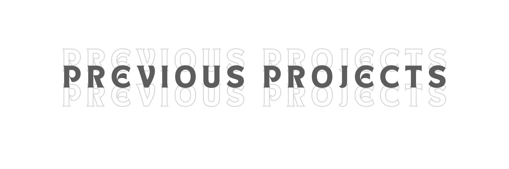
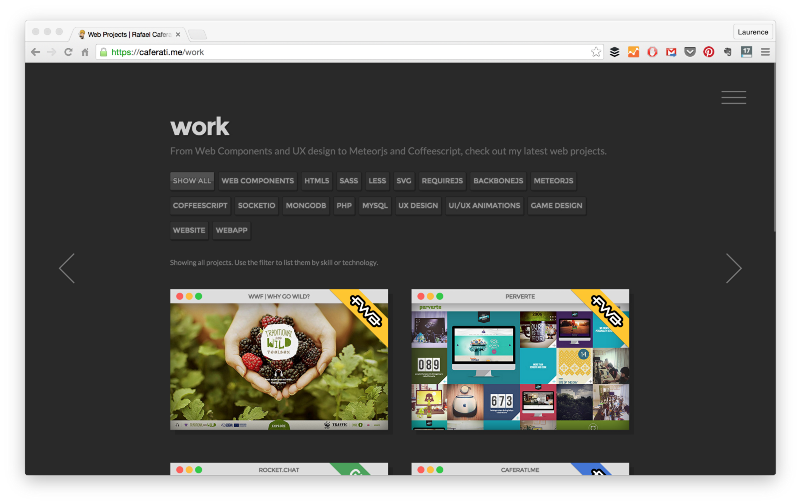
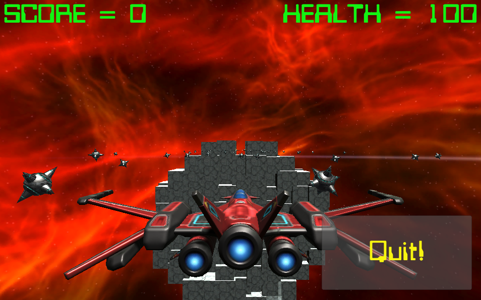

A BUSINESS WEBPAGE
The project aims to develop a fully functional e-commerce website,
enabling customers to browse, select, and purchase products online.
A SIMPLE PYTHON GAME
 This project is conceived as a comprehensive and entertaining platform,
where users can delve into the intricacies of virtual games through the prism of Python programming.
SCIENCE-RELATED APPLCIATION

Employs the powerful Simplex method for intricate analyses,
allowing users to craft nutritionally optimal meal
plans aligned with dietary goals and financial considerations.